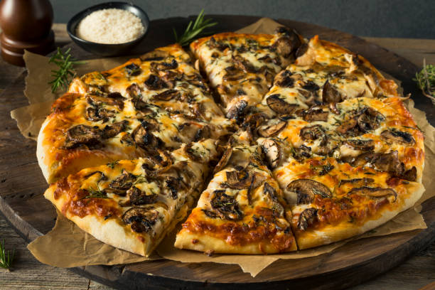
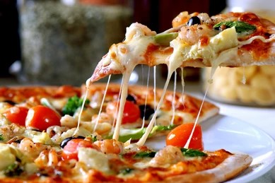

Pepperoni

Mushroom
Extra cheese
Sausage

pizza, dish of Italian origin consisting of a flattened disk of bread dough topped with some combination of olive oil, oregano, tomato, olives, mozzarella or other cheese, and many other ingredients, baked quickly—usually, in a commercial setting, using a wood-fired oven heated to a very high temperature—and served hot.
The first concrete information on pasta products in Italy dates to the 13th or 14th centuries. In the 1st century AD writings of Horace, lagana (singular: laganum) were fine sheets of fried dough and were an everyday foodstuff. Writing in the 2nd century, Athenaeus of Naucratis provides a recipe for lagana which he attributes to the 1st century Chrysippus of Tyana: sheets of dough made of wheat flour and the juice of crushed lettuce, then flavoured with spices and deep-fried in oil. An early 5th century cookbook describes a dish called lagana that consisted of layers of dough with meat stuffing, an ancestor of modern-day lasagna. However, the method of cooking these sheets of dough does not correspond to the modern definition of either a fresh or dry pasta product, which only had similar basic ingredients and perhaps the shape. The first concrete information concerning pasta products in Italy dates from the 13th or 14th century.


A hamburger, or simply burger, is a food consisting of fillings—usually a patty of ground meat, typically beef—placed inside a sliced bun or bread roll. Hamburgers are often served with cheese, lettuce, tomato, onion, pickles, bacon, or chilis; condiments such as ketchup, mustard, mayonnaise, relish, or a "special sauce", often a variation of Thousand Island dressing; and are frequently placed on sesame seed buns. A hamburger patty topped with cheese is called a cheeseburger.Hamburgers are often sold at fast-food restaurants and diners, but are also sold at various other restaurants. There are many international and regional variations of hamburger. Some of the largest multinational fast-food chains have a burger as one of their core products: McDonald's Big Mac and Burger King's Whopper have become global icons of American culture.


A sandwich is a food typically consisting of vegetables, sliced cheese or meat, placed on or between slices of bread, or more generally any dish wherein bread serves as a container or wrapper for another food type. The sandwich began as a portable, convenient finger food in the Western world, though over time it has become prevalent worldwide.In the 21st century there has been considerable debate over the precise definition of sandwich, and specifically whether a hot dog or open sandwich can be categorized as such. In the United States, the Department of Agriculture and the Food and Drug Administration are the responsible agencies. The USDA uses the definition, "at least 35% cooked meat and no more than 50% bread" for closed sandwiches, and "at least 50% cooked meat" for open sandwiches.


Soft drink, any of a class of nonalcoholic beverages, usually but not necessarily carbonated, normally containing a natural or artificial sweetening agent, edible acids, natural or artificial flavours, and sometimes juice. Natural flavours are derived from fruits, nuts, berries, roots, herbs, and other plant sources. Coffee, tea, milk, cocoa, and undiluted fruit and vegetable juices are not considered soft drinks.The term soft drink was originated to distinguish the flavoured drinks from hard liquor, or distilled spirits. Soft drinks were recommended as a substitute in the effort to change the hard-drinking habits of early Americans. Indeed, health concerns of modern consumers led to new categories of soft drinks emphasizing low calorie count, low sodium content, no caffeine, and “all natural” ingredients.


| Dine Partner | Latest | More | Restaurateur |
|---|---|---|---|
| About Us | News | Privacy Policy | Delicious Foodresturant.com |
| Blog | FAQ's | Terms & Conditions | |
| Contact Us | Book A Table | Suggest A Restaurant | All rights reserved @ 2024 |